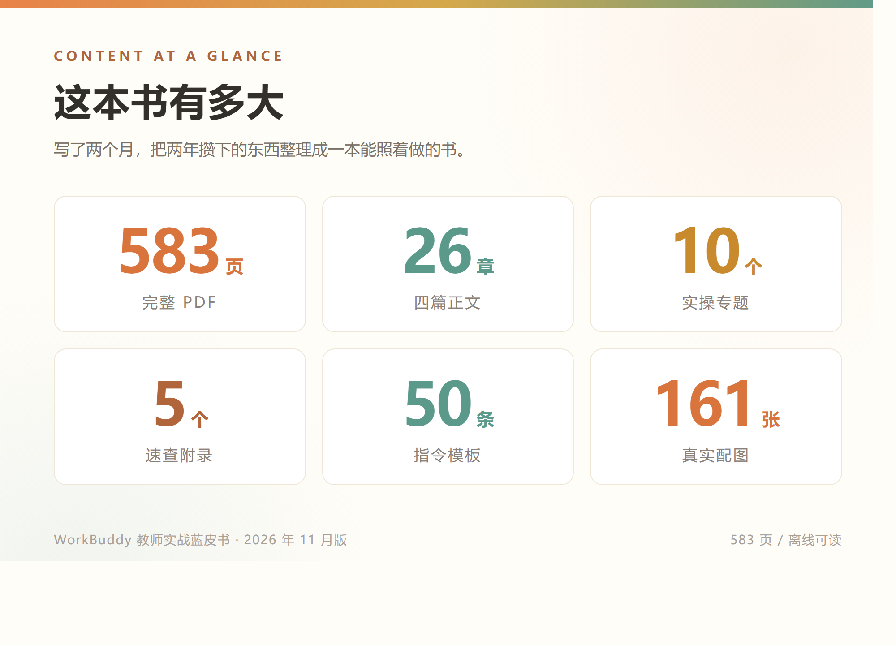
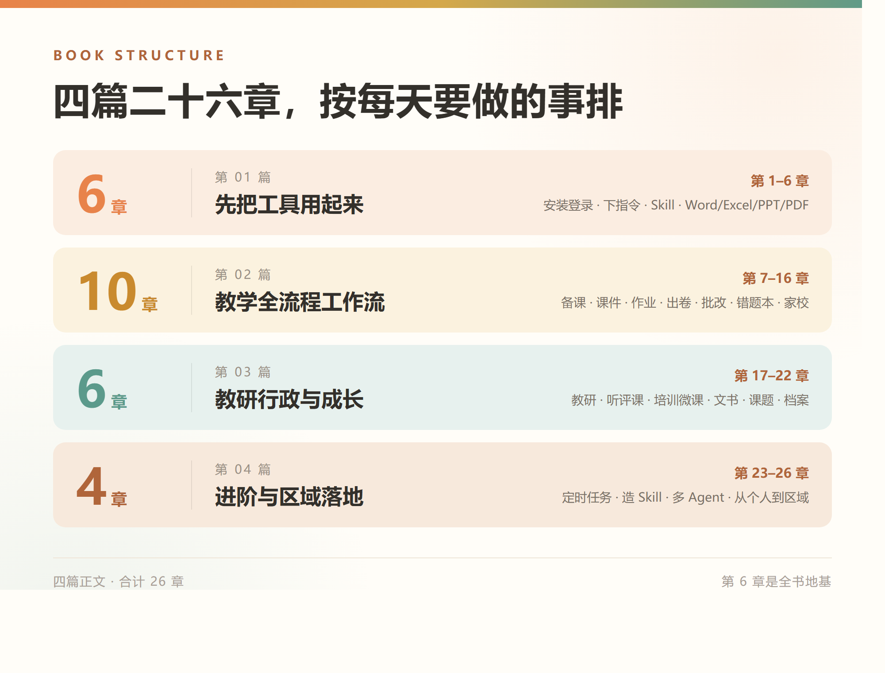
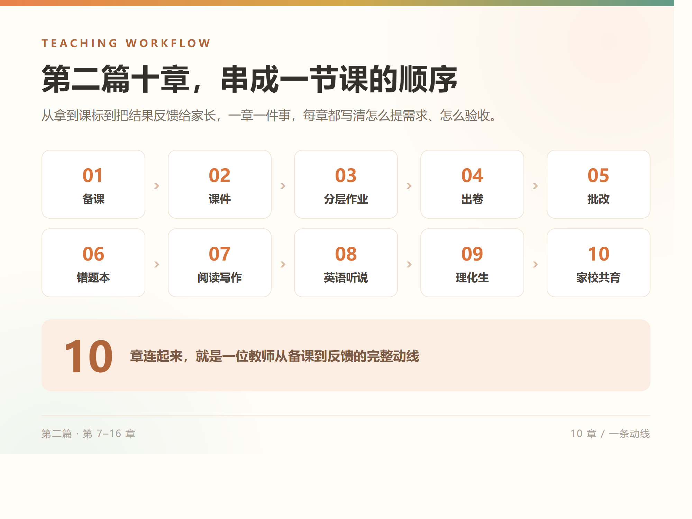
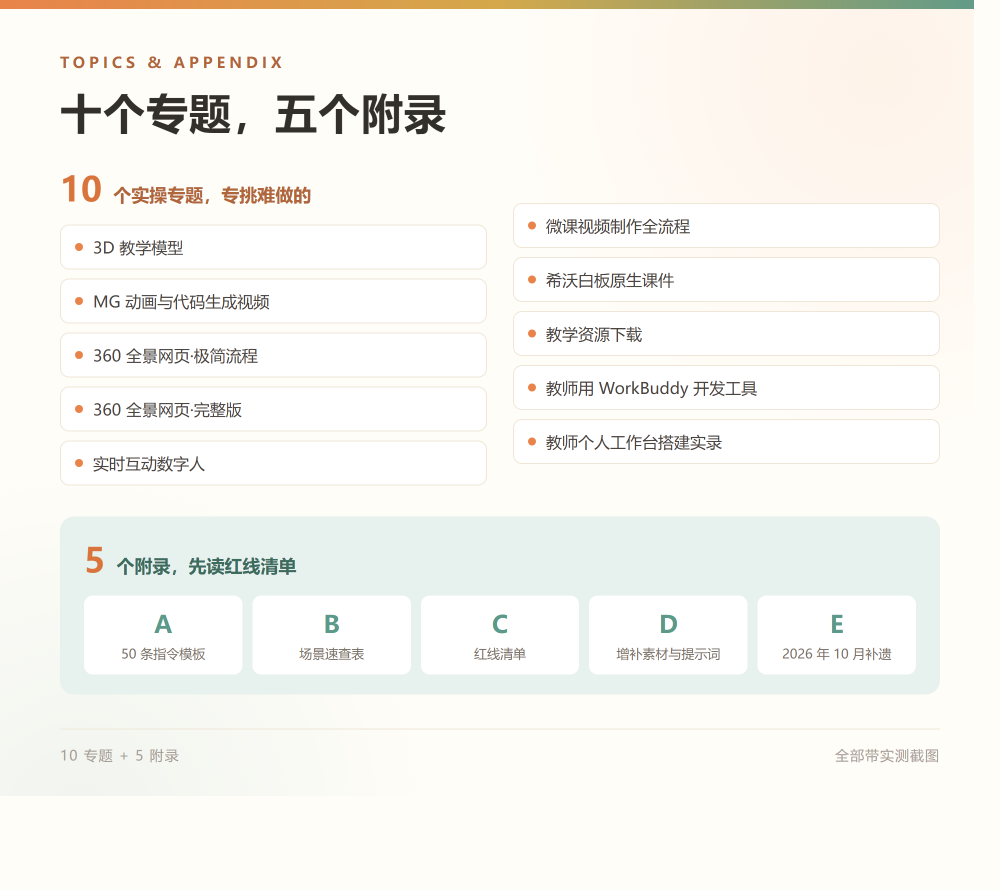
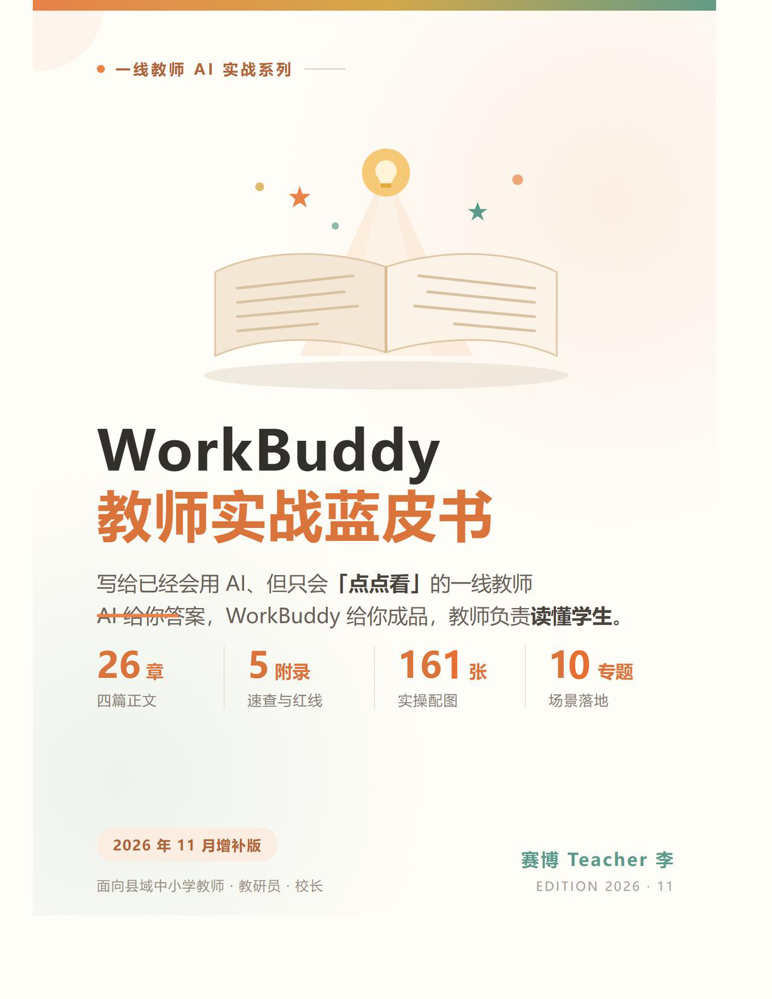
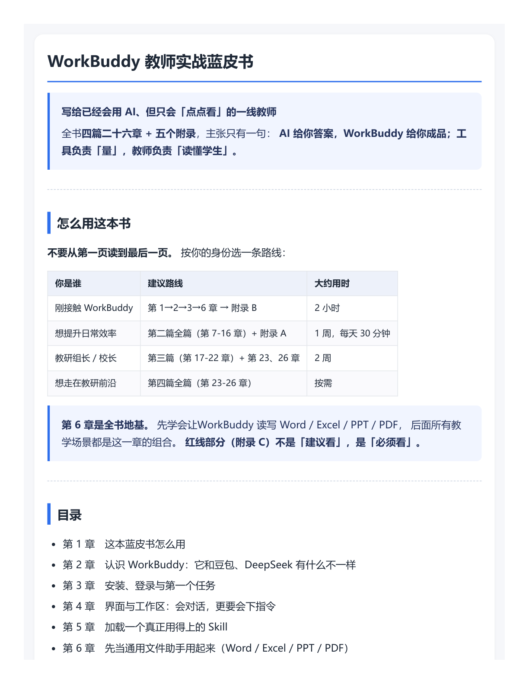

583 页 PDF，给县乡教师的 WorkBuddy 上手手册
26 个章节 10 个专题 5 个附录 50 条指令 161 张配图 583 页
写了两个月。县乡学校时间碎、设备杂、网不稳，书里每个做法都按这个前提写过一遍。里面有什么，四张图看完。

图 1 六个数字看容量

图 2 四篇正文，按每天要做的事排

图 3 第二篇十章，串成一节课的顺序

图 4 十个专题与五个附录
书里 161 张图，全部来自本机真实运行。

PDF 封面实拍
第 2 页有张按身份选路线的表，刚接触的、想提效的、教研组长、校长各有一条路。

书内第 2 页实拍
想直接拿走用的，私信回复 蓝皮书，583 页带图 PDF 发你。
也可以自己取。
Gitee 源文件、Markdown、构建脚本
飞书在线版，完整带图